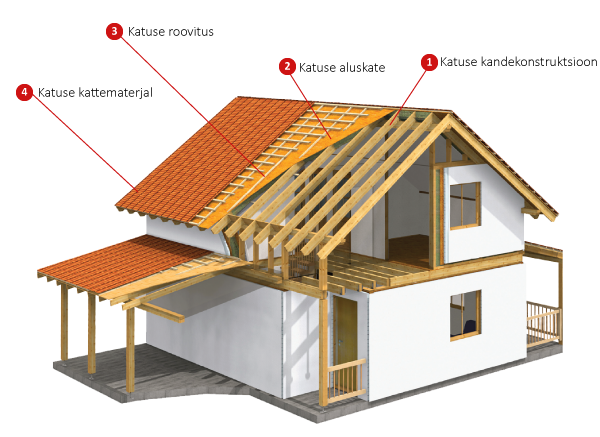

Katus on ehitise ülemine osa, mis koosneb eri materjalidest ja konstruktsioonilistest elementidest ning toetub ehitise seintele ja tugedele. Katuse peamine ülesanne on kaitsta ehitist vihma, lume, päikse, temperatuuri ja tuule eest.[1] Katuse materjal ja kuju oleneb ehitise funktsioonist, materjalide kättesaadavusest, kohalikest ehitustavadest ja arhitektuurilisest disainist. Katuse ehitus on enamasti reguleeritud kohalike või riiklike eeskirjade ja normidega.
